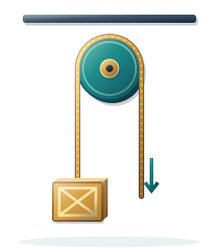
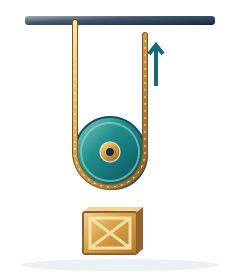
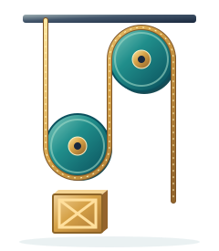

نفكّر بالتكنولوجيا
عالم من عجلات
الصوت قريبًا
كيف تساعدنا العجلات والبَكَرَات في حياتنا؟
تعلّم | العجلة والبَكرة
الصوت قريبًا
تسأل لين: كيف كانت حياة الناس قبل اختراع العجلة؟
المس جزءًا من البَكَرَة لتتعرّف إلى وظيفته
اختر العجلة أو المحور أو الحبل في الرسم أو من الأزرار.
قارن بين أنظمة البَكَرَات

الثابتة: يبقى محورها في مكانه وتغيّر اتجاه السحب.
جرّب | ارفع الصندوق وحرّك الدراجة
توقّع اتجاه الصندوق، ثم اسحب الحبل. لا تبدأ الحركة حتى تضغط زر السحب.
جرّب البَكرة مع لين ويزن
البَكَرَة الثابتة
كيف تتحرّك عجلة الدراجة؟
العجلة الخلفية مرفوعة عن الأرض. المس الزر وراقب انتقال الحركة.
١. الدوّاسة٢. السلسلة٣. العجلة الخلفية
اضغط الزر لمتابعة انتقال الحركة.
طبّق | تحقّق من فهمك
صنّف الرسومات
اختر نوع كل نظام، وراقب مكان المحور والحَمولة.

اختر إجابتك.

اختر إجابتك.
اختر إجابتك.
نتيجتك في الدرس
الصوت قريبًا